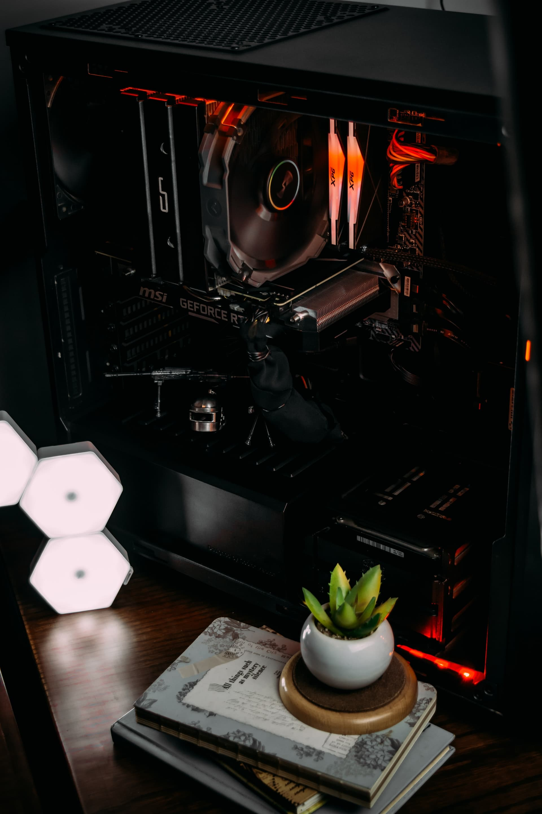
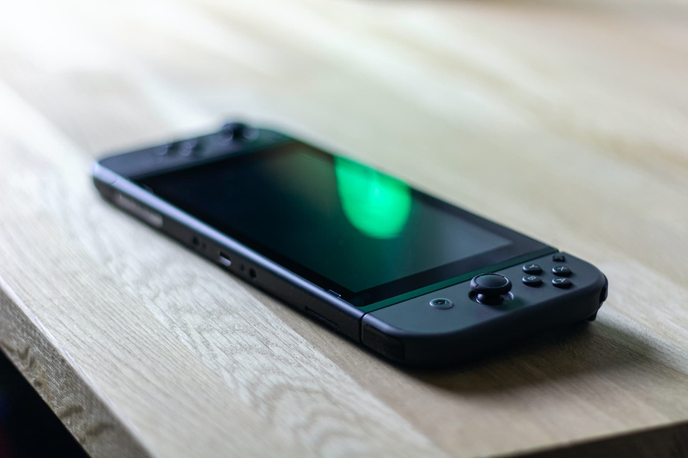

If you read the home page for the gaming section, one of the gaming systems mentioned in that page was a gaming PC. I had one built so I can play games that I have either never played before or replay games on a different platform that what I have played on earlier in life. There's plenty of advantages on having a Gaming PC as opposed to a video game console, but that would end up creating a huge list of stuff to sort through for organization.
One thing to note is that on my Gaming PC, I mainly play games most of the time with a controller. Keyboard and Mouse controls are still a work in progress for me, but I'm thankful there's plenty of games that offer controller support (both full and partial on some of them).


Nintendo Switch
Another game system I'm happy to own is a Nintendo Switch. While I didn't get the console when it released in 2017, I did purchase one back in 2019 after I had received a couple of paychecks. After that event, I never looked back on that decision.
The hybrid console has a good amount of games that are fun to play, some of which are some of my favorites. They range from Super Smash Bros. Ulitmate all the way to Astral Chain and Persona 5 Strikers. Being able to play games on the go and at home is a definite advantage to this system, and I'm proud to play games on one.
Nintendo 3DS/New 2DS XL
One of the (slightly) older systems I own is a Nintendo 3DS and New 2DS XL. Both of these systems marked Nintendo's specialty with developing great portable games, both of which helped contribute to Nintendo developing the Nintendo Switch. Even though they're considered out-of-date at this point in time, I'm still happy I own these systems.
Having the ability to play both Original DS and 3DS titles is a great advantage to the 3DS line of portable game systems. One thing I have done that people may want to try is add custom firmware to the system to increase usability with the system. A fair amount of game systems like the Nintendo Wii, Wii U, and PSP can have their firmware modified to allow more options for playing games (It's definitely worth checking out).